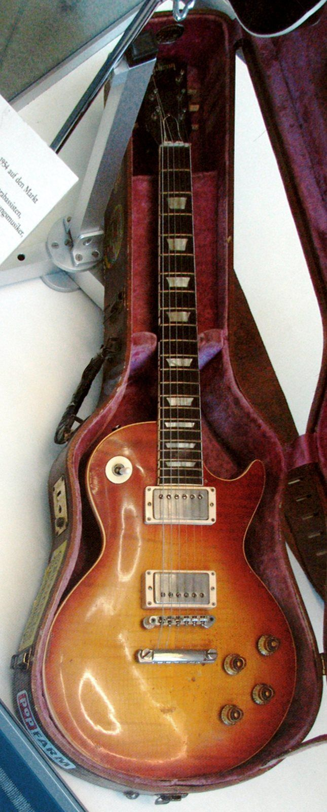
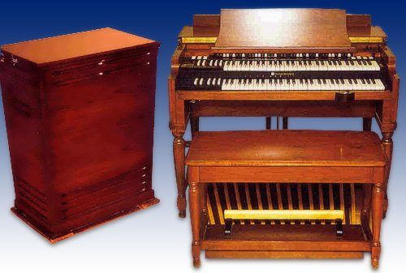

1973 年 5 月 5 日，美国佛罗里达州坦帕体育场。
一支英国乐队站在台上，台下有五万六千多人。这个数字打破了 The Beatles 1965 年在纽约谢伊球场创下的单场观众纪录。
八年前，四个利物浦青年在球场上演出时，台下的尖叫声大到他们根本听不见自己在弹什么。八年后，这支叫 Led Zeppelin 的乐队，靠着成墙的音箱和巨大的扩音系统，让整个体育场都听见了他们的吉他。
摇滚变“大”了。不只是音量大，而是一切都变大了：riff 更重，独奏更长，嗓音更高，舞台更远，明星更像神。这就是硬摇滚。
摇滚那章讲到，1960 年代末摇滚开始变重、变响，那条路留到了这一章。在本书的地图上，硬摇滚位于“摇滚”和“金属”之间：它比 1960 年代的摇滚更重，又比后来的金属更“布鲁斯”、更像派对音乐。下一章的朋克反对“太贵、太远的摇滚”，有一半就是在说它。
这一章照旧先拆零件：power trio、riff、鼓、嗓子、管风琴、吉他英雄、体育场；然后讲 1980 年代的华丽与回归；再讲一个和版权有关的话题：硬摇滚从布鲁斯“借”来的东西，后来是怎么打上官司的。
01 / what什么是硬摇滚
硬摇滚（hard rock）没有一个精确的起点，大致可以说：1960 年代中后期，一批英国乐队把美国的布鲁斯拿过来，用更大的音箱、更重的失真、更响的鼓重新演奏，就成了硬摇滚。它的几个特征：
- 以 riff 为中心：一首歌往往是围绕一个吉他 riff 搭起来的
- 失真吉他 + 强力和弦：比 1960 年代的摇滚更“厚”
- 大鼓、大音量：鼓手和吉他手一样是主角
- 高亢的嗓音：主唱常常唱到很高、带着嘶哑的爆发
- 炫技的独奏：吉他独奏、管风琴独奏、鼓独奏
- 布鲁斯的底子：五声音阶、十二小节、呼应，到处都是布鲁斯那章的影子
硬摇滚和金属的区别
这两个词经常混用，边界确实模糊。一个粗略的区分：硬摇滚还在“摇摆”，金属开始“砸”。硬摇滚保留了很多布鲁斯的律动和派对感，歌词多是性、酒、公路、快乐时光；金属则更快、更暗、更机械，离布鲁斯越来越远，歌词转向黑暗、神话和社会。Black Sabbath 1970 年的首张专辑通常被看作两者的分界点之一，这条路留给 B4 金属那一章。
02 / power trio三个人，最大的声音
1966 年，英国出现了一支只有三个人的乐队：吉他、贝斯、鼓，加上吉他手和贝斯手轮流唱。他们叫 Cream。三个人都是当时公认的顶尖乐手，演出时常常把一首三分钟的布鲁斯拉成二十分钟的即兴，三件乐器像在吵架一样互相推。这种编制叫“power trio”（强力三人组）。
没有第二把吉他，意味着贝斯不能只弹根音，要弹出旋律来填空；鼓不能只打节奏，要不停地加花；吉他要同时管节奏和独奏。人少，反而每个人都要更“大”。Jimi Hendrix 的乐队也是三人组，后来很多硬摇滚和金属乐队的核心都是这个编制。
这一时期吉他手的地位也被抬到了空前的高度。Cream 的吉他手 Eric Clapton 还在上一个乐队时，伦敦的墙上就出现了“Clapton is God”的涂鸦。“吉他英雄”的时代开始了。
注意听：贝斯不只是在弹根音，它在走自己的旋律；鼓在每小节结尾加花；吉他在 riff 和独奏之间切换。三件乐器都没闲着。

03 / riffriff 是主角
摇滚那章说 riff 是“一句让你记住整首歌的话”。在硬摇滚里，riff 不只是让你记住，它就是整首歌的骨架。很多硬摇滚歌曲的写法是：先有一个 riff，然后在它上面填主歌、副歌和歌词。
硬摇滚的 riff 大致有三种：
- 低音单音 riff：在低音弦上弹一串单音，常常和贝斯齐奏，像一条粗壮的低音线。它直接来自布鲁斯的 boogie 低音
- 强力和弦 riff：用强力和弦弹出有切分的节奏，更像“砸”，后来被朋克和金属发扬光大
- 呼应式 riff：主唱唱一句，乐队停下来；乐队弹一句 riff，主唱停下来。这就是布鲁斯那章的“呼应”，被放大到了整个乐队
吉他和贝斯齐奏一条粗壮的线。
切分的“砸”。
人声一句，乐队一句，轮流说话。
闷音：让 riff 更“紧”
硬摇滚吉他手常用一个小技巧：用右手掌的侧面轻轻压在琴桥附近的弦上，再拨弦，声音会变短、变闷、变“紧”，像在“突突突”地开拖拉机。这叫“闷音”（palm mute）。闷音和不闷音交替，就能让同一个 riff 有呼吸感：紧、紧、紧，然后突然放开。
每一下都让弦自由振动。
前面闷住“突突突”，最后一下放开。
摇摆还是不摇摆
硬摇滚和金属的一个重要区别在律动。很多硬摇滚 riff 是带着一点布鲁斯摇摆（shuffle）的，八分音符一长一短，有一种“晃”的感觉；金属的 riff 则大多是笔直的、机械的。
每拍平分成两半，第二个音落在拍子的正中间。
拍子一样快，但每拍的第二个音晚一点进来，听起来一长一短。
04 / drums鼓：大房间里的雷声
硬摇滚的鼓手不再是“伴奏”。Led Zeppelin 的鼓手 John Bonham 打得又重又慢一点点，像在拖着整个乐队往后坐，却又刚好在拍子上。他的鼓声听起来巨大，有一半功劳要给录音的“房间”。
1971 年，Led Zeppelin 在英格兰乡间一座叫 Headley Grange 的老房子里录音。他们把鼓搬到了三层楼高的楼梯间，在楼上挂了话筒。楼梯间巨大的回响，让鼓声听起来像在山谷里打雷。这种“大房间鼓声”后来影响了几十年的摇滚录音。
干、近、紧。
同样的鼓，加上巨大空间的回响。
05 / voice嗓子：高、尖、嘶
硬摇滚的主唱有一种共同的声音：非常高（男声常常唱到女高音的音域），带着刻意的嘶哑和爆发，在长音的结尾“撕开”。Led Zeppelin 的 Robert Plant、Deep Purple 的 Ian Gillan 都以这种“尖叫”出名。
这种唱法有两个来源：一是布鲁斯和福音歌手的嘶吼（Little Richard 那种），二是为了在越来越响的乐队里被听见。乐队越吵，主唱就得越高、越尖。
合成的人声只能模仿个大概：一个很高的长音，加上失真和颤动，结尾往下“甩”。真正的效果去听推荐曲目里的《Highway Star》。
06 / organ管风琴也能很重
巴洛克那章的管风琴是在教堂里的。到了 1960–70 年代，一种叫哈蒙德（Hammond）的电风琴成了摇滚、灵魂乐和爵士的标配。它通常接一个特别的音箱，叫 Leslie：音箱里的喇叭在转圈，声音一会儿靠近、一会儿远离，产生一种旋转、波动的效果。
Deep Purple 的键盘手 Jon Lord 更进一步：他把哈蒙德风琴接进了吉他用的大功率音箱，开到失真。于是风琴不再温柔，变得和吉他一样粗、一样凶，两件乐器可以在独奏里互相“斗”。

直接出声。
声音开始“转”起来。
接进吉他音箱，开到冒烟。
07 / guitar hero吉他英雄
1970 年代是吉他独奏的黄金年代。Jimmy Page、Ritchie Blackmore、Angus Young……每个乐队都有一个吉他英雄，独奏动辄几分钟。他们用的语言，大多还是布鲁斯的五声音阶加推弦和揉弦（摇滚那章实验 06 讲过），但越来越快、越来越华丽。
点弦：用两只手弹指板
1978 年，Van Halen 乐队的首张专辑里有一首不到两分钟的吉他独奏曲《Eruption》，其中一段让所有吉他手目瞪口呆：吉他手 Eddie Van Halen 用右手的手指直接在指板上“点”出音符，配合左手，弹出了快得不可思议的琶音。这种技巧叫“点弦”（tapping）。它并不是他发明的，但是他让它变成了 1980 年代几乎每个摇滚吉他手的必修课。
摇把俯冲
另一个 1980 年代的标志性声音是“俯冲”（dive bomb）：吉他手按住琴上的摇把往下压，弦的张力变小，音高一路往下掉，像轰炸机俯冲下来。
Am – F – G – E，每个和弦一组快速的三连音。
一个高音，然后一路掉下去。
会说话的吉他
还有一个奇妙的小装置叫“对讲盒”（talk box）：把吉他的声音通过一根管子送进吉他手的嘴里，吉他手做出说话的口型，再用话筒录下来。于是吉他好像在“说话”。Peter Frampton 1970 年代的现场专辑和 Bon Jovi 1986 年的《Livin' on a Prayer》都用了它。
同一个吉他音，滤波器在模仿“哇”“喔”“咿”几个元音之间切换，听起来像在说话。
08 / arena体育场的颂歌
1970 年代中期，最红的硬摇滚乐队开始在体育馆、体育场巡演。场地变大，音乐也跟着变：歌要让五万人一起唱、一起跺脚。于是出现了“体育场颂歌”（stadium anthem）：简单、有力、可以全场齐声唱的副歌，以及让观众参与的节奏。
最有名的例子是 Queen 1977 年的《We Will Rock You》：几乎没有乐器，只有“跺、跺、拍”的节奏和人声，乐队在录音棚里一遍遍跺脚、拍手，叠出一整个体育场的声音。它的设计目的就是让观众不需要任何乐器也能参与。
这里每一下“跺”和“拍”都叠了很多层、时间上有微小的差别，模拟一大群人。最后是全场齐唱一个长音。
强力抒情曲
硬摇滚乐队还发明了一种特别的慢歌，叫“强力抒情曲”（power ballad）：开头是木吉他或钢琴的温柔抒情，到副歌突然加入失真吉他和重鼓，越唱越高，最后是一段激情的吉他独奏。演唱会上，这是观众举起打火机（后来是手机）的时刻。
先是干净吉他的分解和弦，然后鼓和失真吉他一起进来，最后吉他独奏接过旋律。
09 / 1980s1980 年代：华丽与回归
1981 年 8 月，美国音乐电视台 MTV 开播。从此，音乐不只是听的，还要“好看”。硬摇滚进入了它最华丽的阶段：蓬松的大发型、紧身裤、化妆、烟火，加上闪亮的合成器、合唱般的和声和更“干净”的流行副歌。这种风格后来被戏称为“发型金属”（hair metal），代表是 Bon Jovi、Def Leppard 等。
1980 年代的录音也有自己的标志声音，最有名的是“门限混响”军鼓：给军鼓加一个巨大的混响，再在混响尾巴拖长之前把它一刀切断。于是军鼓听起来又大又短，像一声爆炸。
但物极必反。1987 年，洛杉矶的 Guns N' Roses 发行了首张专辑《Appetite for Destruction》，带着脏、乱、危险的街头感，把硬摇滚拉回了布鲁斯和朋克的粗糙。四年后的 1991 年，Nirvana 的《Nevermind》把“安静—大声”的另类摇滚推上了主流（摇滚那章讲过），几乎一夜之间，发型金属就显得过时了。
不过，有一支乐队一直没怎么变过：澳大利亚的 AC/DC。1980 年，主唱 Bon Scott 去世几个月后，他们和新主唱发行了《Back in Black》，它至今仍是世界上销量最高的专辑之一。简单的 riff、直白的后拍、四十多年几乎不变的配方，这本身就是硬摇滚的一种态度。
10 / borrowed blues从布鲁斯借来的，要不要还
民歌与乡村那章说过，民歌和布鲁斯的传统是“旧旋律、旧歌词随便拿，配上新的东西”，Woody Guthrie 的名曲借用了 Carter 一家唱过的旧旋律。在口头传统里，这是天经地义的。
可是当一支英国乐队把美国黑人布鲁斯歌手的歌改编成自己的作品，卖出几千万张唱片，而原作者几乎什么都没拿到时，事情就不一样了。硬摇滚的历史，有一部分也是一部版权纠纷史。Led Zeppelin 是被讨论得最多的例子。
《Whole Lotta Love》：和解
Led Zeppelin 1969 年的《Whole Lotta Love》，部分歌词和布鲁斯作者 Willie Dixon 写、Muddy Waters 录过的一首歌非常相似。1980 年代 Dixon 提起诉讼，最后双方庭外和解，Dixon 的名字被加进了这首歌的作者署名里。
《Stairway to Heaven》：不侵权
另一起官司更有法律上的意义。原告认为《Stairway to Heaven》开头的分解和弦，抄袭了美国乐队 Spirit 1968 年的一首器乐曲。2016 年，陪审团认定不构成侵权；原告上诉后，2020 年美国第九巡回上诉法院以全院庭审的方式维持了这个结果，美国最高法院随后拒绝受理。
这个案子有几个值得注意的点（以下只是对公开报道的简要概括，不构成法律意见）：
- 保护的是什么：涉案作品适用美国 1909 年版权法，法院认为受保护的范围以当年向版权局提交的乐谱为准，而不是后来的录音。于是陪审团听不到原曲录音，只能听根据乐谱演奏的版本
- “反比例规则”被废除：过去第九巡回法院有一个规则，接触作品的证据越强，对“实质性相似”的要求就越低。这次全院庭审明确废除了这个规则
- 音乐的“公共领域”：一段半音下行的和弦（巴洛克那章说的“哀歌低音”就是同类东西）是几百年来作曲家共用的材料，不能被一个人独占。保护过宽，后来的人就没法写歌了
这两个案子背后是同一个问题：“借”和“偷”的边界在哪里。音乐一直是在前人的基础上长出来的，本书每一章都在讲这件事。法律要在“保护原创者”和“给后来者留出空间”之间找平衡，而布鲁斯老艺人们大多没能等到这个平衡。
11 / asia在亚洲
硬摇滚在亚洲也有自己的分支。
- 中国：摇滚那章说的黑豹乐队，1990 年代初的专辑在香港和内地都卖得很好，《无地自容》等歌是典型的硬摇滚：失真吉他 riff、高亢的嗓音、强力抒情的副歌。唐朝乐队则更偏向重金属（留给 B4 金属那一章）
- 日本：1980 年代末成立的 B'z 把硬摇滚的吉他和日本流行的旋律结合在一起，是日本唱片史上销量最高的音乐人之一。日本的动漫和游戏音乐里，至今能听到大量硬摇滚的吉他
12 / listen听：本章十二首曲目
按时间顺序听。每首歌都提供 YouTube、网易云和 QQ 音乐的搜索链接。
13 / practice练 · 术语表
练习 1：riff 是哪一种？
听《Sunshine of Your Love》《Black Dog》《Back in Black》，判断它们的主 riff 分别属于实验 02 的哪一种：低音单音、强力和弦，还是呼应式？
练习 2：找“晃”
听《Highway Star》和《Black Dog》，跟着鼓拍手。哪一首是笔直的八分音符？哪一首带着一点摇摆？
练习 3：强力抒情曲的地形
听《Dream On》，按摇滚那章图 7 的方法画出它的地形图：从哪里开始变响？最高点在哪里？
练习 4：借与偷
去搜 Willie Dixon 写的《You Need Love》（Muddy Waters 1962 年录音），再听《Whole Lotta Love》。你觉得哪些地方像？哪些地方是 Led Zeppelin 自己加的？
术语表
- 硬摇滚
- 1960 年代末兴起的更重、更响、以 riff 为中心的摇滚
- power trio
- 只有吉他、贝斯、鼓三人的乐队编制
- riff
- 不断重复、构成整首歌骨架的短乐句
- 闷音
- 用手掌侧面压住琴桥附近的弦，让声音短而紧
- shuffle
- 八分音符一长一短的摇摆律动
- 大房间鼓声
- 在回响很大的空间录鼓，让鼓声显得巨大
- 哈蒙德风琴
- 1930 年代发明的电风琴，摇滚、灵魂乐的常用键盘
- Leslie 音箱
- 喇叭会旋转的音箱，让声音产生波动
- 吉他英雄
- 以技巧和独奏闻名、地位如明星的吉他手
- 点弦
- 用右手手指直接在指板上按出音符的技巧
- 摇把俯冲
- 压下摇把让音高急速下降的效果
- 对讲盒
- 把乐器声音送进嘴里、用口型塑造元音的效果器
- 体育场颂歌
- 为大场地设计、便于全场齐唱的歌曲
- 强力抒情曲
- 从温柔开头逐渐加入失真吉他和重鼓的摇滚慢歌
- 发型金属
- 1980 年代注重形象和流行副歌的华丽硬摇滚
- 门限混响
- 巨大混响在尾巴拖长前被突然切断的 1980 年代鼓声
- 反比例规则
- 曾在美国部分法院使用的版权规则：接触证据越强，对相似度的要求越低；2020 年被第九巡回法院废除